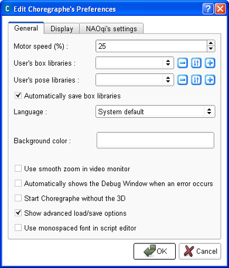

Choregraphe Preferences
To open the preferences of the application, go to the menu Edit > Preferences.
The following widget is displayed:

The Choregraphe’s preferences widget has 3 tabs containing options you can set:
- General
- Motor speed (%): this preference corresponds to the speed of the robot’s
motors when you move a joint in the 3D view, click on
a keyframe of a Timeline, or
select a pose in the Pose Library panel.
It is not advised to exceed 75% as it could prematurely damage the motors of the robot.
- User’s box libraries: this option lets you choose one or more box
libraries saved on your computer which will be automatically loaded at Choregraphe
startup.
- User’s pose libraries: this option lets you choose one or more pose libraries
saved on your computer which will be automatically loaded at Choregraphe startup.
- Automatically save box libraries: if this option is enabled, when you
exit Choregraphe the opened box libraries will be automatically saved.
- Language: select the language of the application. The interface will
then be translated in this language.
- Background color: select the color of the application’s background.
- Use smooth zoom in video monitor: when this option is enabled, the pictures
from the camera are tried to be drawn with the best resolution possible.
The picture will have then a better quality but will take more processor to
be displayed.
- Automatically shows the Debug Window when an error occurs: When this
option is enabled, the Debug window
is automatically displayed as soon as an error occurs in the execution of a behavior.
- Start Choregraphe without the 3D: replace the 3D view with a static 2D
picture of the robot. So you do not have any feedback anymore about the move
of the robot but it does not take so much processor. Moreover, you are still
able to move the joints of the robot by selecting the body part you want to move.
See the 3D View section for more information about this feature.
- Show advanced load/save options: when this option is enabled, you get
some more options in the File and Box library menus. You then can save or
open a project or a box library as a directory. If you want more information
about this feature go to How to open or save a project or a box library
as a directory?.
- Use monospaced font in script editor: when this option is enabled, the
font used in the script editor
is monospaced. It means that any character will take the same space on the screen as another
(which is not the case of the font used by default).
- Display
- This tab enables to choose the graph color of each motor in the curve
editor of the Timeline.
- NAOqi’s settings
- NAOqi’s folder: you can here set a folder for your local NAOqi. For example
if the binary NAOqi is in D:/workspace/dev/naoqi/bin, you need to
set D:/workspace/dev/naoqi as the folder of NAOqi. If this preference is empty,
it will take the default local NAOqi installed with Choregraphe.
- Version: select the model of your local NAOqi. You first have the name
of the robot, then the model, then the version. So for example if you want
to simulate your behavior on a NAO which has no leg but arms (model T14) and
with the version V3.3 of its hardware, you need to select NAOT14V33.xml.
Note
Most of these preferences require a restart of Choregraphe to be applied.
So after validating your changes by clicking on OK, quit the application
and start it again for them to be applied.